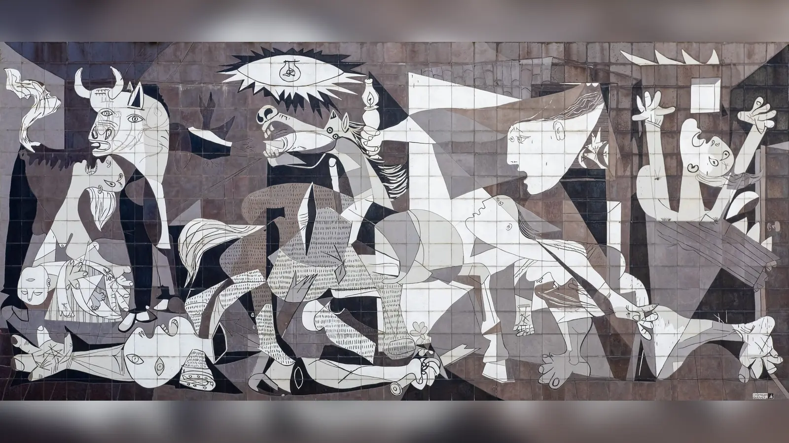
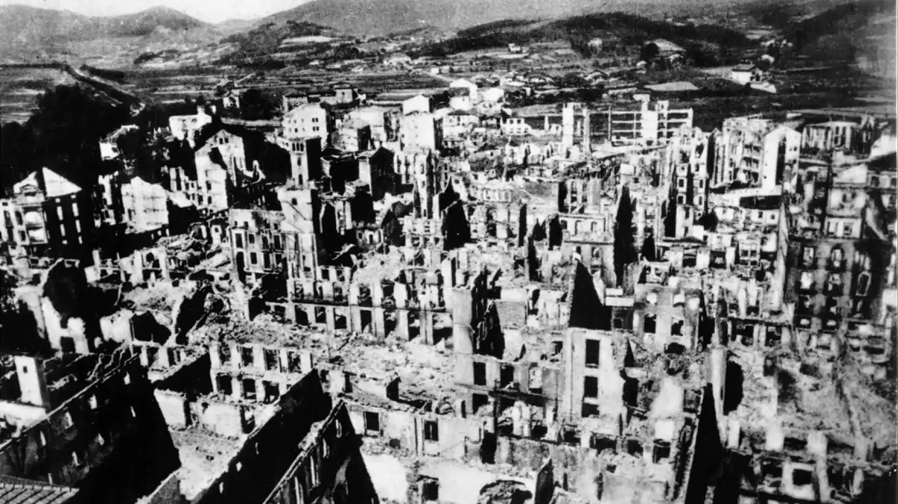
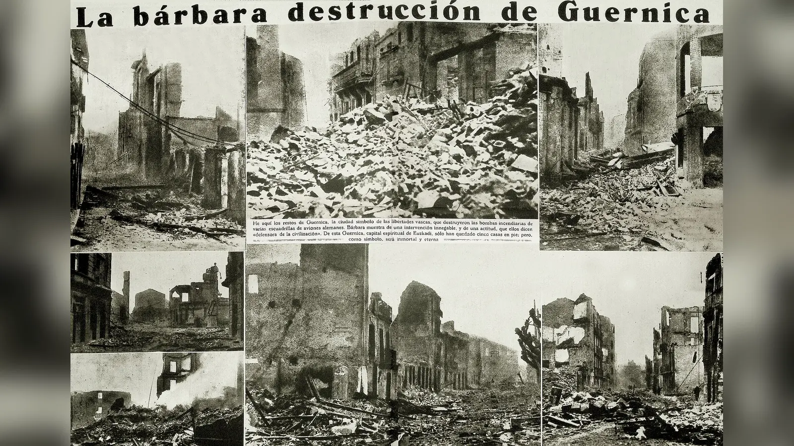
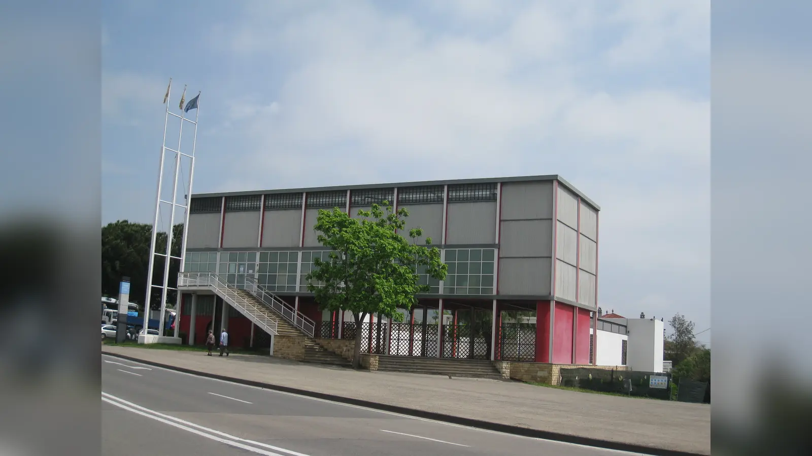

26 Nisan 1937 Pazartesi günü Bask bölgesindeki Guernica’da gökyüzünün sesi değişti. İspanya İç Savaşı sürerken kasaba Cumhuriyetçi bölgenin içindeydi ve Franco’nun Milliyetçi kuvvetleri kuzey cephesinde ilerliyordu. Nazi Almanyası’nın Condor Lejyonu ile Faşist İtalya’ya bağlı hava birliklerinin gerçekleştirdiği saldırı, yalnızca askerî tarih tartışmalarının değil, 20. yüzyılın sivil savaş deneyiminin de en güçlü simgelerinden birine dönüşecekti. Paris’te yaşayan Pablo Picasso bombardımanı görmedi. Fakat haberler Fransa’ya ulaştığında, birkaç ay önce İspanya Cumhuriyetçi Hükûmeti tarafından 1937 Paris Uluslararası Sergisi’ndeki İspanyol Pavyonu için kendisinden istenen büyük resmin konusu değişti. Reina Sofía’nın kayıtlarına göre Picasso 1 Mayıs’ta hazırlık çalışmalarına girişti ve büyük tuval üzerindeki esas süreç 4 Haziran’a kadar ilerledi.
Ortaya çıkan resim bombardımanın fotoğrafı değildir. Guernica’da uçak, bomba, Guernica’nın tanınabilir bir sokağı, askerî üniforma veya açık bir coğrafi işaret yoktur. Bunun yerine 349,3 × 776,6 santimetrelik dev tuvalde bir boğa, ölümcül biçimde yaralanmış at, ölü çocuğunu taşıyan anne, parçalanmış savaşçı, kaçan ve yanan insanlar, elektrik ampulü ile gaz lambasının birbirine karışan ışıkları vardır. Siyah, beyaz ve gri bedenler aynı dar mekânda kırılır, üst üste biner ve çığlık atar. Picasso belirli bir saldırıyı tanınabilir ayrıntılarla kaydetmek yerine savaşın bedende, ailede ve güvenli mekân duygusunda bıraktığı sonucu resmin biçimine taşır.
Guernica’nın ünü, her şeklin çözülebilecek tek bir şifreye sahip olmasından gelmez. Boğa, at, ampul, lamba ve küçük çiçek onlarca yıldır farklı biçimlerde yorumlanmaktadır. Picasso’nun açıklamaları da bunları tek tek sabitleyen güvenilir bir sözlük bırakmaz. Bu yüzden eseri anlamanın sağlam yolu üç katmanı ayırmaktır: 1937’de gerçekten ne olduğu, tuvalde gerçekten ne görüldüğü ve bu görüntülere hangi yorumların getirildiği. Bu ayrım yapıldığında Guernica gizemini kaybetmez; neden hâlâ savaş karşıtı görsel kültürün en güçlü eserlerinden biri olduğu daha açık hâle gelir.
Guernica Tablosu Ne Anlatıyor?
Guernica, en doğrudan anlamıyla savaşın siviller, hayvanlar, aileler ve gündelik yaşam üzerindeki yıkımını anlatır. Tarihsel çıkış noktası 26 Nisan 1937’deki Guernica bombardımanıdır; fakat Picasso saldırıyı belgesel sahneye dönüştürmez. İzleyiciye “bombardıman tam olarak böyle oldu” diyen kent manzarası yerine, bombardımanın insan bedeninde ve algıda yaratabileceği parçalanmayı verir. Açık ağızlar, sivri diller, ters yönlere dönen yüzler, kopmuş uzuvlar ve birbirine girmiş iç-dış mekânlar yalnızca modernist biçim denemeleri değildir; anlatılan yıkım resmin diline dönüşmüştür.
Merkezde yaralı at yükselir. Sol tarafta boğa ile ölü çocuğunu tutan anne vardır. Zeminde parçalanmış savaşçının bedeni uzanır; kırılmış kılıcının yakınında küçücük çiçek belirir. Üstte göz biçimini andıran alanın içinde elektrik ampulü yanar. Sağdan içeri uzanan kadın elindeki gaz lambasını sahneye getirir; aşağıda başka bir kadın merkeze doğru sürüklenirken en sağda alevler arasındaki figür kollarını kaldırır. Bütün bunlar tek bir gerçek mekâna kolayca yerleştirilemez. Oda, sokak, sahne ve yıkılmış yapı aynı anda varmış gibidir.
Bu belirsizlik eserin temel gücüdür. Guernica yalnızca “Picasso bombardımanı protesto etti” cümlesine indirgenemez; fakat politik bağlamından koparılarak salt evrensel trajedi resmi de yapılamaz. Eser İspanya İç Savaşı’nın belirli koşullarında, Cumhuriyetçi hükûmetin uluslararası destek aradığı pavyon için üretildi. Aynı zamanda belirli askerî işaretleri kaldırarak anne, çocuk, hayvan ve parçalanmış beden üzerinden daha geniş savaş deneyimine açıldı. Daha sonraki protestolarda sürekli yeniden ortaya çıkabilmesinin nedeni bu çift yapıdır: kökü 1937’dedir, fakat görsel dili yalnızca 1937’ye kapanmaz.
Guernica Bombardımanında Ne Oldu?
Guernica, Baskça Gernika, sıradan bir cephe kasabasından daha fazla tarihsel ağırlık taşıyordu. Biscay’ın geleneksel siyasal toplantıları ve Guernica Meşesi çevresinde şekillenen yerel özgürlük geleneğiyle bağlantılıydı. İç savaş sırasında Bask bölgesinin önemli kısmı Cumhuriyetçi tarafta kaldı. 1937 baharında Franco’nun Milliyetçi kuvvetleri kuzey cephesini ele geçirmek için saldırıya geçti. Guernica yol bağlantıları ve geri çekilme güzergâhları bakımından askerî öneme sahipti; aynı zamanda sivillerin yaşadığı sembolik bir Bask kentiydi.
26 Nisan saldırısında Alman Condor Lejyonu başlıca rolü oynadı; İtalyan Aviazione Legionaria unsurları da katıldı. Dolayısıyla bombardımanı yalnızca “Franco’nun uçakları” diye anlatmak eksiktir. Milliyetçi savaş çabasını destekleyen Alman ve İtalyan hava kuvvetlerinin operasyonuydu. Hedefler konusunda tarihçiler uzun süre tartıştı. Köprü, yol bağlantıları ve geri çekilen kuvvetlerin hareketini kesme amacı vurgulanırken, kullanılan bombardıman yöntemi kentsel alanda büyük yıkıma ve sivil kayıplara yol açtı.
“Pazar günü bombardımanı” ifadesi de sık tekrarlanan hatadır: 26 Nisan 1937 Pazartesi idi. Kasabanın geleneksel pazar günü olması, o gün pazarın hangi ölçüde faal olduğu ve kentte kaç kişinin bulunduğu ayrıca tartışılmıştır. Ölü sayısında da tek ve tartışmasız rakam yoktur. Savaş sırasında ve hemen sonrasında verilen bazı tahminler çok yüksek rakamlara ulaşırken sonraki arşiv araştırmaları daha düşük sayılar önermiştir. United States Holocaust Memorial Museum yaklaşık 200 veya daha fazla sivilin öldüğünü aktarır; başka modern araştırmalarda farklı hesaplamalar bulunur. Rakam tartışması saldırının siviller üzerindeki yıkıcı etkisini ortadan kaldırmaz, fakat propaganda döneminin sayıları ile sonraki belge temelli tahminler birbirine karıştırılmamalıdır.
Bombardımanın dünyada bilinmesinde gazetecilik belirleyiciydi. George Steer’ın The Times ve The New York Times için haberleri saldırının Alman bağlantısını ve yıkımı uluslararası okura taşıdı. Picasso’nun Paris’te haberi hangi kaynaklardan hangi sırayla öğrendiğinin her ayrıntısı kesin değildir; fakat 1 Mayıs tarihli hazırlık çizimlerinin başlaması, yön değişiminin ne kadar hızlı olduğunu gösterir.

Picasso Guernica’yı Neden Yaptı?
Picasso’nun bombardıman haberini okuyup tamamen kendiliğinden Guernica’ya başladığı anlatısı çekicidir ama eksiktir. İspanya Cumhuriyetçi Hükûmeti sanatçıdan daha önce Paris’te düzenlenecek Exposition Internationale des Arts et Techniques dans la Vie Moderne içindeki İspanyol Pavyonu için büyük ölçekli eser istemişti. Picasso 1936’da Prado’nun onursal müdürlüğüne getirilmişti ve Cumhuriyetçi tarafla açık siyasal bağ kurmuştu. Fakat siparişin ardından hemen Guernica konusuna yönelmedi; erken taslaklarında sanatçı ve model çevresinde daha kişisel bir atölye konusu üzerinde düşündüğü bilinir.
Bombardıman bu hazırlığın yönünü değiştirdi. Reina Sofía eseri Paris’te 1 Mayıs–4 Haziran 1937 olarak tarihler. Picasso aynı dönemde Sueño y mentira de Franco — Franco’nun Düşü ve Yalanı — gravürleri üzerinde de çalışıyordu. Metropolitan Museum of Art’a göre iki baskının çalışmaları 8 Ocak’ta başlamış, Franco’yu grotesk saldırgan figür olarak hicveden sahneler Cumhuriyetçi hükûmete destek amacıyla kartpostal biçiminde çoğaltılmıştı. İkinci levhanın bombardımandan sonra eklenen son sahneleri Guernica’nın bazı figürleriyle doğrudan görsel akrabalık taşır.
Bu bağlantı Picasso’nun politik tepkisinin bombardımanla sıfırdan başlamadığını gösterir. Franco karşıtlığı ve Cumhuriyet’e desteği zaten görünürdü. Guernica ise bu tutumu tek bir liderin karikatüründen daha geniş felaket diline çevirdi. Resimde Franco’nun portresi, gamalı haç, faşist üniforma veya Cumhuriyet bayrağı yoktur. Bu seçim politikliği azaltmaz; saldırganın ambleminden önce sonuçların — ölü çocuk, yaralı hayvan, parçalanmış asker, yanan insan — merkezde kalmasını sağlar.
Picasso’yu kusursuz ahlaki kahramana dönüştürmek de gereksizdir. Özel yaşamı, kadınlarla ilişkileri ve siyasal tutumlarının farklı dönemleri ciddi eleştirilerin konusudur. Guernica’nın tarihsel ve sanatsal değeri bütün kişisel davranışlarını savunmayı gerektirmez. Eserin politik etkisi Cumhuriyetçi sipariş, Franco karşıtlığı ve ortaya çıkan görsel dil üzerinden değerlendirilebilir.
Guernica Tablosundaki Figürler Kimlerdir?
Guernica’da adlandırılabilir tarihsel kişiler yoktur. Picasso belirli kurbanların portrelerini yapmaz; figürler anne, çocuk, savaşçı, yaralı hayvan ve kaçan insan gibi temel rollere indirgenmiştir. Sol uçta boğa neredeyse sağlam kalan tek varlık gibi yükselir. Altında anne ölü çocuğunu tutar ve başını geriye atarak çığlık atar. Merkezde atın bedeni keskin üçgenler ve yaralarla parçalanmıştır. Zeminde savaşçı ayrışmış uzuvlarla yatar; elinde kırık kılıç vardır. Sağdan içeri uzanan baş ve kol gaz lambasını merkeze getirir. Alt tarafta eğilmiş kadın yaralı veya kaçmaya çalışan beden gibi ilerler. En sağdaki figür alevlerin arasında kolları yukarı kalkmış hâlde sıkışmıştır.
İnsan ve hayvanların aynı felaket alanına yerleştirilmesi önemlidir. Hayvanlar dekor değildir. At kompozisyonun merkezini kaplar, boğa sol sütun kadar güçlüdür. Savaş böylece yalnızca orduların karşılaşması olmaktan çıkar; canlı bedenin bütünü şiddetin alanına çekilir. Anne, at ve sağdaki figür farklı anatomilere sahip olsalar bile açık ağızlar ve sivri dillerle aynı çığlığın biçimsel dilini paylaşır.
Boğa ve At Neyi Simgeliyor?
Popüler açıklamalarda “boğa Franco’dur, at İspanya halkıdır” şeklinde tek satırlık çözüm sık görülür. Bu yorum literatürde vardır, fakat kesin anahtar değildir. Carla Gottlieb’in boğa ve at üzerine çalışmasının da gösterdiği gibi birbirine zıt okumalar yapılmıştır. Bunun nedeni iki motifin Picasso’nun sanatında Guernica’dan çok önce bulunmasıdır. Boğa güreşi, boğa ve Minotauros sanatçının çocukluğundan itibaren İspanyol kültürüyle ve kişisel repertuvarıyla bağlantılıydı.
1930’larda Minotauros saldırganlık, cinsellik, körlük, kurbanlık ve sanatçının kendisiyle ilişkilendirilebilen değişken anlamlar taşır. Guernica’daki boğa vahşet ve karanlıkla, Franco’yla, İspanya’nın dayanıklılığıyla, kayıtsız seyirciyle veya Picasso’nun alter egosuyla ilişkilendirilmiştir. Hiçbiri bütün kanıtları tek başına tüketmez.
At için de aynı durum geçerlidir. Merkezde acı içinde kıvranan atın halkı, Cumhuriyetçi İspanya’yı, masum kurbanı veya savaşın ezdiği bedeni temsil ettiği ileri sürülmüştür. Franco’nun Düşü ve Yalanı gibi yakın eserlerde boğa ile atın rolleri bile sabit değildir. En güvenli okuma, bu hayvanların İspanyol boğa güreşi kültüründen ve Picasso’nun kişisel ikonografisinden yoğun anlam yükleri taşıdığı, fakat Guernica’da tek siyasal eşleşmeye indirgenemediğidir.
Ölü Çocuğunu Taşıyan Anne Neyi Anlatıyor?
Sol taraftaki anne, tarihsel bağlamı bilmeyen izleyici için bile okunabilir. Çocuğun bedeni kollarında hareketsizdir; annenin başı geriye savrulur, ağzı keskin açıklığa dönüşür ve dili sivrilir. Sivil kayıp askerî stratejinin soyut dilinden çıkarılıp ebeveyn ile çocuk arasındaki kopuşa dönüşür. Picasso belirli bir Guernicalı anne ve çocuğun portresini yapmaz.
Sanat tarihçileri figürü Batı sanatındaki Pietà geleneğiyle, Meryem’in ölü İsa’yı tuttuğu yas görüntüleriyle karşılaştırmıştır. Benzerlik anlamlıdır, fakat Guernica’daki anne doğrudan Meryem değildir ve çocuk ikonografik olarak İsa değildir. Bağlantı, dinsel sanatın güçlü yas kalıbının modern savaş bağlamında yankılanması olarak görülmelidir. Figürün açık ağzı, Çığlık tablosunda olduğu gibi modern sanatta sesin bütün kompozisyonu dönüştüren görsel biçime dönüşebileceğini hatırlatır; iki eser elbette aynı tarihsel olayı veya anlamı taşımaz.
Yerdeki Asker, Kırık Kılıç ve Çiçek Ne Anlama Geliyor?
Zemindeki savaşçı askerî kimliğe en çok yaklaşan figürdür; yine de üniforması, rütbesi veya ordu işareti yoktur. Bedeni parçalanmıştır. Kopuk kollar ve baş, savaşın insan bedenini bütünlükten çıkaran etkisini doğrudan kompozisyona taşır. Kırık kılıç geleneksel kahramanlık resminin zafer silahı olmaktan çok yenilmiş veya işlevsiz hâle gelmiş direniş aracıdır.
Kılıcın yakınındaki küçük çiçek en kolay gözden kaçan ayrıntılardandır. Ölümün yanında yaşamın sürme ihtimali, umut veya direniş olarak yorumlanmıştır. Bu okuma görsel karşıtlığa dayanır ve güçlüdür; fakat “Picasso kesin olarak gelecekteki zaferi müjdeledi” demek gereksizdir. Küçük bitki bütün trajediyi olumlu sona dönüştürmez. Guernica klasik zafer tablosunun tersine çalışır: kazanan orduyu değil, savaşın geride bıraktığı bedeni gösterir.
Guernica’daki Ampul ve Lamba Neyi Simgeliyor?
Üst merkezdeki elektrik ampulü çevresindeki sivri biçim nedeniyle dev gözü andırır. Altında yaralı at kıvranırken mekanik ışık sahneyi aydınlatır. Sağdan uzanan kadın ise elinde eski tip gaz lambası taşır. Elektrik ampulü modern teknoloji, soğuk gözetim, patlama, savaş teknolojisinin gözü veya tanrısal gözün sekülerleşmiş biçimi olarak yorumlanmıştır. İspanyolca ampul anlamındaki bombilla kelimesinin “bomba”yı çağrıştırması üzerinden kurulan kelime oyunu da ünlüdür. Bunun Picasso tarafından tasarlanmış doğrulanmış şifre olduğunu gösteren kesin kanıt yoktur.
Gaz lambası insan eliyle sahneye taşınır. Bu nedenle umut, vicdan, tanıklık veya daha insani bir ışık olarak okunmuştur. Elektrik ampulünün yukarıdan sert ışığıyla elde taşınan lambanın yakın ışığı arasında gerçek bir görsel karşıtlık vardır; fakat bunu “eski dünya iyi, modern teknoloji kötü” formülüne çevirmek eseri azaltır. Göz biçimindeki ampul izleyicinin konumunu da rahatsız eder: tanık mı, gözetleyici mi, patlamanın yankısı mı olduğu açık değildir. Bakış sorunu bu yönüyle, bambaşka tarihsel bağlamdaki Las Meninas için de merkezi olan izleyici meselesini hatırlatır.
Picasso Guernica’yı Neden Siyah Beyaz Yaptı?
Siyah, beyaz ve gri palet için tek belgelenmiş neden yoktur. Gazete fotoğrafları önemli bağlamdır: bombardımanın uluslararası kamuoyuna ulaşmasında basılı haberler ve fotoğraflar belirleyiciydi ve monokrom yapı bu dünyayı çağrıştırır. Fakat “gazeteye benzesin diye” açıklaması tek başına yeterli değildir. Renk yokluğu yas ve ölüm duygusunu güçlendirir, keskin ışık-karanlık karşıtlığını artırır ve çok sayıdaki parçalanmış figürü ortak düzende birleştirir.
Kan kırmızısı veya ateş turuncusu göstermemek izleyicinin doğal renk beklentisini bozar. Beyaz alanlar projektör altında kalmış gibi parlar, siyahlar boşluk ve yanmış yüzey etkisi yaratır, gri geçişler beden ile mekân sınırını belirsizleştirir. Aynı zamanda renk, dev yüzeydeki çok sayıda figürü daha da karmaşıklaştırabilirdi. Monokrom düzen üçgenleri, çizgileri, açık ağızları ve ışık alanlarını ortak ritme bağlar. Böylece renk yokluğu hem basın görüntülerini çağrıştıran, hem yas duygusunu yoğunlaştıran hem biçimsel bütünlük sağlayan bir tercih hâline gelir.

Kübizm Guernica’daki Acıyı Nasıl Görünür Kılıyor?
Guernica’yı “Kübist olduğu için her şey geometrik” diye açıklamak yetersizdir. Kübizm nesneyi tek sabit bakış açısından göstermek yerine farklı görüşleri aynı yüzeyde birleştiren, hacmi parçalayan ve resmin düzlemine dikkat çeken bir devrim yaratmıştı. Fakat 1937 Guernica’sı erken Analitik Kübizm örneği değildir. Reina Sofía eseri geç Kübist ve Sürrealist unsurları Batı tarih resmi geleneğiyle birleştiren karmaşık çalışma olarak değerlendirir.
Burada parçalanma anlatının kendisine hizmet eder. Bir yüz hem profilden hem cepheden algılanabilir; gözler normal anatomik yerlerinden çıkar; burunlar, diller ve uzuvlar keskin düzlemlere dönüşür. Savaş bedenin bütünlüğünü yok ederken resmin sistemi de bütünlüklü anatomiyi reddeder. İzleyici güvenli perspektif kurallarıyla mekânda ilerleyemez; alan sürekli çöker ve yeniden açılır.
Dar, sahne benzeri kompozisyon sıkışmayı artırır. Ortadaki figürler üçgensel düzende yükselirken sağ ve soldaki gruplar alanı kapatır. İç ve dış mekân ayrımı kesin değildir. Pencere, kapı, alev, duvar ve zemin farklı perspektiflere açılır. Picasso bombardımanın topografyasını çizmeden güvenli mekân duygusunun yok oluşunu hissettirir. Yaklaşık 27 metrekarelik yüzeyde açık ağızlar ve sivri diller küçük ayrıntı olarak kalmaz; izleyicinin görüş alanını kaplayan fiziksel deneyime dönüşür.
Guernica’nın Kompozisyonu ve Görmediğimiz Şeyler
Guernica’nın dev boyutlarına rağmen ferahlık değil sıkışma yaratması önemlidir. Yaklaşık 7,8 metrelik yüzey yatay açılır, fakat figürlerin hareket edebileceği güvenli derinlik oluşmaz. Sol taraftaki boğa ve anne, merkezdeki at ve düşmüş savaşçı, sağdaki kadınlar ve alev içindeki figür birbirlerinin alanına taşar. Geleneksel perspektifin izleyiciyi düzenli basamaklarla içeri götüren mimari derinliği parçalanmıştır. Duvar, pencere, kapı ve zemin işaretleri vardır ama tek mimari plana bağlanmaz.
Bu sıkışma bombardımanın deneyimini belgesel olarak kopyalamadan çağrıştırır. Bir evin güvenli iç mekânı ile savaşın dışarıdaki alanı arasındaki sınır çöker. Sağdaki alevler bir yapının içini gösterirken merkezdeki atın alanı hem oda hem meydan gibi okunabilir. Savaş geldiğinde özel alan ile kamusal alan arasındaki koruyucu sınır yok olmuştur.
Resmin yoklukları da olağanüstüdür. Bombardımanla ilgili olmasına rağmen uçak, patlayan bomba, askerî araç, pilot veya üniforma yoktur. Guernica Meşesi veya tanınabilir kent mimarisi de resme girmez. Bu yokluk eserin politik bağlamını silmez; adı, sipariş tarihi, Picasso’nun 1937’deki politik üretimi ve pavyondaki konumu bağlantıyı açık tutar. Tersine, internette karmaşık çizgiler arasında “gizli kafatası”, harf, sayı veya özel kod bulma çabaları da kanıt sayılmaz. Bir biçimin başka bir nesneye benzemesi, Picasso’nun onu kasıtlı gizli şifre olarak tasarladığını kanıtlamaz.
Dora Maar Guernica’nın Yapımını Nasıl Belgeledi?
Guernica’nın oluşumunu bugün olağanüstü ayrıntıyla izleyebilmemizin temel nedenlerinden biri Dora Maar’dır. Maar yalnızca Picasso’nun özel yaşamındaki kişi değildi; sürrealist çevrelerle ilişkili, kendi fotoğraf pratiği bulunan önemli sanatçıydı. 1937’de rue des Grands-Augustins’de Guernica’nın yapım aşamalarını sistemli biçimde fotoğrafladı. Reina Sofía’nın Rethinking Guernica arşivi müzenin koleksiyonunda eserin farklı aşamalarını gösteren toplam yirmi sekiz fotoğraf bulunduğunu belirtir.
Fotoğraflar bitmiş eseri tek ilham patlamasında ortaya çıkmış değişmez görüntü gibi düşünmemizi engeller. İlk aşamalarda ana figürlerin çoğu vardır; fakat pozlar, mekân ve yüzey sürekli değişir. Bazı biçimler çıkarılır, bazıları yer değiştirir, ton alanları eklenir. Teknik araştırmalar kızılötesi görüntülemeyle boya katmanlarının altında bu değişikliklerin bir bölümünü bugün de izleyebilir.
Maar’ın dizisi nihai eseri önceki seçeneklerle karşılaştırma olanağı sunar. Yine de her değişikliği gizli anlamın anahtarı saymak doğru değildir. Sanatçılar kompozisyon, denge, okunurluk ve pratik nedenlerle karar değiştirir. Maar’ın fotoğrafları Picasso’nun düşündüğünü, sildiğini ve yeniden kurduğunu gösterir; her silinen biçimin ayrı politik şifre olduğunu değil. Maar’ı yalnızca “Picasso’nun sevgilisi” diye anmak bu tarihsel katkıyı görünmez kılar.

Guernica İlk Sergilendiğinde Nasıl Karşılandı?
Guernica 1937 Paris Uluslararası Sergisi’ndeki İspanyol Pavyonu için yapıldı. Josep Lluís Sert ve Luis Lacasa’nın tasarladığı pavyon, iç savaş sürerken Cumhuriyetçi hükûmetin kültürel ve politik vitriniydi. Amaç yalnızca modern sanat göstermek değil, Cumhuriyet’in meşruiyetini uluslararası kamuoyuna anlatmak ve savaşın yıkımına dikkat çekmekti. Joan Miró, Alexander Calder, Julio González ve başka sanatçıların eserleri; fotoğraf ve belgelerle birlikte güncel savaş deneyimini pavyona taşıyordu.
Guernica büyük ölçeğiyle merkezi eserdi, fakat bugün sahip olduğu “20. yüzyıl başyapıtı” statüsünü ilk günden herkesin paylaştığını söylemek yanlıştır. Dönemin eleştirileri çeşitlidir. Bazıları eserin gücünü öne çıkarırken, bazı Cumhuriyetçi çevrelerde modernist dilin kitlelere yeterince açık olup olmadığı sorgulandı. Rethinking Guernica arşivindeki 1937 basını övgü ve eleştirileri yan yana gösterir.
Pavyon geçici yapıydı ve sergi sonrasında yıkıldı. Guernica’nın bağlamı ise sonraki sergilerde değişti. Avrupa ve Amerika’da dolaştıkça Cumhuriyetçi davaya ve İspanyol mültecilere yardım etkinlikleriyle ilişkilendirildi. 1939’da New York’taki MoMA retrospektifinde gösterilmesi Amerika’daki görünürlüğünü büyüttü. Bir pavyon siparişi uluslararası dolaşıma giren politik imgeye dönüştü.
Guernica Neden Yıllarca Amerika’da Kaldı?
Guernica Avrupa ve Amerika’daki sergilerden sonra 1939’da New York Museum of Modern Art’a geldi. İkinci Dünya Savaşı ve Franco diktatörlüğünün yerleşmesiyle Picasso eserin güvenliği için MoMA’nın korumasını uygun gördü. Reina Sofía’ya göre 1958’de ödünç verme durumu İspanya’da demokratik özgürlükler yeniden kurulana kadar belirsiz süreyle uzatıldı.
Picasso’nun arzusu zamanla mülkiyet ve “demokrasi ne zaman yeterince kurulmuş sayılır?” sorularını içeren hukuki-siyasi meseleye dönüştü. Rethinking Guernica, sanatçının diktatörlük sürerken eserin İspanya’ya gitmemesi konusunda kararlı olduğunu ve avukatı Roland Dumas’yı iradesinin uygulanmasında görevlendirdiğini gösterir. Belgelerde demokratik özgürlüklerin yeniden kurulması ile Cumhuriyet’in dönüşüne ilişkin ifadeler süreci basit tek koşullu vasiyet anlatısından daha karmaşık hâle getirir.
Picasso 1973’te, Franco 1975’te öldü. 1978 Anayasası ve demokratik seçimlerle dönüşüm ilerledikçe iade görüşmeleri hızlandı. Guernica 9 Eylül 1981’de MoMA’dan çıkarıldı ve ertesi gün Madrid’e ulaştı. Önce Prado’ya bağlı Casón del Buen Retiro’da sergilendi. MoMA kayıtlarına göre kurumda 42 yıl uzun süreli ödünç olarak kalmıştı. New York dönemi eserin küresel ününü de büyüttü.
Guernica Bugün Nerede?
Guernica bugün Madrid’deki Museo Nacional Centro de Arte Reina Sofía koleksiyonundadır. 1992’de Casón del Buen Retiro’dan Reina Sofía’ya taşındı. Müzenin güncel kaydı tablonun yağlıboya-tuval tekniğini ve 349,3 × 776,6 santimetre ölçülerini doğrular. Yaklaşık 3,5 metre yüksekliğinde ve 7,8 metre genişliğindeki yüzey izleyicinin görüşünü fiziksel olarak kuşatır.
Reina Sofía’nın yaklaşımı tabloyu duvara asmaktan ibaret değildir. Rethinking Guernica yüzlerce belge, fotoğraf, mektup, sergi kaydı ve araştırmayı dijital ortamda bir araya getirir. Gigapiksel sistem görünür ışık, ultraviyole, kızılötesi ve X-ışını gibi yöntemlerle yüzey ve alt katmanların incelenmesini sağlar. Çatlaklar, boya kayıpları, destek sorunları ve önceki müdahaleler de izlenir.
Eserin geçmişteki çok sayıdaki yolculuğu fiziksel izler bıraktı. Güncel koruma yaklaşımı bu dev ve hassas eserin gereksiz hareketini azaltır. Bu nedenle başka ülkelerdeki geçici Picasso sergilerine gönderilmesi artık beklenen bir uygulama değildir; kamusal erişim Madrid’deki kalıcı sergileme çevresinde sürdürülür.
Guernica Neden Savaş Karşıtı Bir Sembol Oldu?
Guernica’nın savaş karşıtı simgeye dönüşmesi yalnızca konusundan kaynaklanmaz. Belirli tarihsel başlangıcına rağmen saldırganı ve coğrafyayı doğrudan göstermeyerek yeniden kullanılmaya açık görüntü yarattı. Anne ve çocuk, yaralı hayvan, kırılmış savaşçı ve yanan insan farklı savaşların kurbanlarıyla özdeşleştirilebildi. Sergi yolculukları bunu hızlandırdı. Cumhuriyet için yardım bağlamındaki gösterimler, ardından MoMA’daki uzun dönem, eseri uluslararası hafızaya yerleştirdi. Daha sonra savaş karşıtı afişlerde, gösterilerde, duvar resimlerinde ve politik karikatürlerde figürleri yeniden kullanıldı.
Birleşmiş Milletler merkezindeki Guernica duvar halısı bu sürecin dikkat çekici örneğidir. Nelson A. Rockefeller tarafından yaptırılan dokuma, Güvenlik Konseyi girişinde uzun süre sergilendi. Şubat 2003’te Irak savaşı öncesindeki basın açıklamaları sırasında bulunduğu arka plan mavi perdeyle kapatıldı. Olay, savaş hakkında konuşan yetkililerin arkasında Guernica görüntüsünün bulunmasının ironisi nedeniyle haber oldu. Fakat bunu “tablo savaşı engellemesin diye sansürlendi” diye sloganlaştırmak doğru değildir; televizyon görüntüsü ve basın alanının görsel düzeni gibi gerekçeler de dönemin açıklamalarında yer aldı.
Guernica’nın etkisi Picasso’nun bütün savaşlara dair tek ve eksiksiz politik teori ortaya koymasından değil, savaşın sonucunu güçlü görsel dile çevirmesinden gelir. Emir veren propaganda sloganı içermez. Kimin haklı olduğunu yazıyla açıklamaz. Savaşın bedenleri nasıl anlamsızlaştırdığını gösterir. Bu yüzden farklı hareketler eseri kendi bağlamlarına taşıyabilmiştir.
Guernica’nın Ölçeği, Tarih Resmi Geleneği ve İzleyici
Guernica’nın 349,3 × 776,6 santimetrelik ölçüsü yalnızca teknik bilgi değildir. Böyle bir yüzey, figürleri insan ölçeğinin üzerine çıkarır ve izleyicinin tabloyla ilişkisini değiştirir. Geleneksel Avrupa tarih resmi de savaş, devrim ve devlet olaylarını büyük tuvallerde anlatmıştı. Reina Sofía’nın değerlendirmesi Guernica’nın piramidal düzenini ve Rubens, Delacroix, David, Goya gibi geçmiş ustalarla kurulabilecek bağları özellikle hatırlatır. Picasso modernist biçim dilini kullanırken tarih resminin anıtsal iddiasından vazgeçmez; fakat bu ölçeği hükümdar, general veya zafer için değil kurbanlar için kullanır.
Bu tersine çevirme önemlidir. Geleneksel savaş resminde izleyici çoğu zaman savaşın sonucunu, kahramanı veya belirli tarihsel kişiyi tanır. Guernica’da ise komutan yoktur. Parçalanmış savaşçı bile bireysel kahraman olmaktan çıkar. Dev ölçekte büyütülen şey zafer değil çığlık, ölüm ve yönünü kaybetmiş bedendir. Böylece kamusal anıt dili, anti-kahramanlık yönünde kullanılır.
Picasso’nun daha önceki Minotauromachy gibi çalışmalarındaki boğa, at, kadın ve ışık motiflerinin Guernica’ya taşınması da eserin bombardıman haberine verilen anlık tepkiden ibaret olmadığını gösterir. Sanatçı yıllardır geliştirdiği kişisel biçimleri güncel politik felaketle yeniden düzenler. Bu durum sembollerin neden tek karşılığa dirençli olduğunu da açıklar: motiflerin Guernica’dan önceki yaşamları vardır.
Hazırlık sürecindeki değişiklikler bu tarih resmi mantığının adım adım kurulduğunu gösterir. Dora Maar’ın fotoğraflarında figürlerin konumları, yüzeydeki tonlar ve mekânsal ilişkiler değişir. Son biçim, ilk taslağın büyütülmüş kopyası değildir. Bu nedenle eserin anlamı yalnızca ilk eskizde “ne düşünülmüş olabileceği” üzerinden kurulamaz; nihai tuvalde hangi ilişkilerin kaldığına da bakmak gerekir.
Guernica’nın izleyici üzerindeki fiziksel etkisi dijital ekranda kolayca kaybolur. Küçük ekranda boğa, at ve anne yan yana ikonlar gibi görünürken müzede figürler görüş alanını kaplar. Atın gövdesi insan bedeninden büyük, annenin çığlığı yüz hizasının çok üzerindedir. Bu ölçek, resmin kamusal protesto niteliğini güçlendirir. İzleyici felaketi uzaktan seyreden güvenli göz olmaktan çıkar; parçalanmış sahnenin önünde bedensel olarak küçük kalır.
Picasso’nun Politik Dili ve Franco’nun Düşü ve Yalanı
Guernica’yı Picasso’nun 1937’deki diğer politik üretiminden ayırmak eksik sonuç verir. Sueño y mentira de Franco iki levhalı gravür dizisi, Franco’yu grotesk ve canavarlaşmış biçimde hicveder. Metropolitan Museum of Art, iki levhanın toplam on sekiz sahnelik anlatı oluşturduğunu, kartpostal olarak çoğaltılıp Cumhuriyetçi hükûmet yararına satıldığını kaydeder. İlk çalışmalar Ocak 1937’de, yani Guernica bombardımanından aylar önce başladı. Son sahnelerin bir bölümü ise bombardımandan sonra eklendi ve Guernica hazırlıklarıyla görsel ilişki kurdu.
Bu gravürlerle büyük tuval arasındaki fark öğreticidir. Gravürlerde Franco doğrudan hedef alınır; politik hiciv kişileştirilmiştir. Guernica’da ise Franco’nun bedeni ortadan kalkar. Bu, Picasso’nun politik tavrının zayıfladığı anlamına gelmez. Tam tersine sanatçı, belirli liderin grotesk portresinden savaşın kurbanlarına yönelir. İki eser birlikte okunduğunda Guernica’daki fail yokluğunun politik ilgisizlik olmadığı daha açık görülür.
Picasso’nun Cumhuriyetçi hükûmetle ilişkisi de burada önemlidir. Pavyon siparişi devlet destekli uluslararası temsil projesiydi. Guernica’nın sonradan “evrensel” hâle gelmesi, başlangıçta tarafsız ortamda doğduğu anlamına gelmez. Cumhuriyetçi pavyon, savaş içindeki bir hükûmetin kültürel diplomasisiydi. Sanatın, mimarinin, fotoğrafın ve belgenin birlikte kullanılması uluslararası kamuoyunu etkilemeyi amaçlıyordu.
Bununla birlikte Guernica’yı sıradan propaganda afişi olarak adlandırmak da yetersizdir. Afiş çoğu zaman mesajı hızlı ve tek anlamlı biçimde iletmek ister; Guernica ise izleyiciyi belirsizlikle karşılaştırır. Boğa ve atın değişken anlamları, mekânın çözülememesi ve ışık kaynaklarının ikiliği bu nedenle önemlidir. Politik sanatın etkili olmak için mutlaka tek anlamlı olması gerekmediğini gösterir.
Teknik İncelemeler Guernica Hakkında Ne Gösteriyor?
Reina Sofía’nın güncel teknik çalışmaları Guernica’yı yalnızca ikonografik yorumların nesnesi olmaktan çıkarıp maddi bir obje olarak da inceler. Gigapiksel proje görünür ışığın yanı sıra ultraviyole, kızılötesi ve X-ışını görüntülerini bir araya getirir. Kızılötesi reflektografi bazı boya katmanlarının altındaki değişiklikleri görünür kılarken X-ışını farklı yoğunlukları ve yapısal özellikleri incelemeye yardım eder. Bu veriler Dora Maar’ın fotoğraflarıyla birlikte değerlendirildiğinde yapım sürecinin iki ayrı belge türü üzerinden izlenmesini sağlar.
Teknik incelemelerin önemli tarafı, yorumla fiziksel kanıt arasındaki sınırı netleştirmesidir. Örneğin bir figürün yer değiştirdiği alt katmanlarda görülebilir; bu fiziksel bulgudur. Picasso’nun onu neden değiştirdiği ise her zaman aynı kesinlikle bilinmez. Sanat tarihçisi kompozisyon dengesi, anlatı veya biçim üzerinden yorum yapabilir, fakat teknik görüntü sanatçının zihnini doğrudan okumaz.
Eserin maddi tarihi de hareketli sergi yaşamından etkilenmiştir. Dev tuvalin defalarca sarılması, gerilmesi, taşınması ve farklı iklim koşullarında sergilenmesi destek ve boya yüzeyinde sorunlar yaratmıştır. Müzenin teknik sistemi çatlak, fisür, boya kaybı ve geçmiş müdahaleleri izlemeye yardımcı olur. Guernica’nın bugün seyahat ettirilmemesinin temelinde de yalnızca sembolik “milli hazine” statüsü değil, bu fiziksel hassasiyet vardır.
Teknik araştırma ayrıca Picasso’nun hızlı çalışmış olmasını “özensizlik” olarak görmemek gerektiğini gösterir. Mayıs başından haziran başına uzanan yoğun süreçte kompozisyon tekrar tekrar değişmiş, farklı boya uygulamaları denenmiş ve büyük yüzey aşamalı biçimde kurulmuştur. Hızlı üretim ile düşünülmüş revizyon birbirine zıt değildir.
Guernica’nın Sonraki Görsel Kültürdeki Yaşamı
Guernica’nın 20. yüzyıl boyunca yeniden üretilmesi eserin anlamını genişletti. Afişlerde, öğrenci protestolarında, savaş karşıtı yürüyüşlerde ve duvar resimlerinde figürler bazen bütün kompozisyondan koparıldı. Ölü çocuğunu taşıyan anne tek başına sivil kaybın simgesine, at ise savaşta acı çeken bedenin işaretine dönüşebildi. Bu dolaşım, özgün eserin karmaşıklığını zaman zaman azalttı; fakat Guernica’yı müze duvarının dışına taşıdı.
Bu yeniden kullanımların her biri Picasso’nun “onayladığı” anlamlar değildir. Bir eserin sonraki alımlanma tarihi ile sanatçının 1937’deki niyeti farklı araştırma alanlarıdır. Guernica’nın Vietnam, Irak veya başka savaşlarla ilişkilendirilmesi 1937 bağlamının parçası olamaz; bunlar sonraki kuşakların eseri kendi siyasal deneyimlerine uygulamasıdır. Yine de bu süreç eserin neden canlı kaldığını açıklar.
Guernica’nın evrensel savaş karşıtı sembole dönüşmesinde saldırganın görsel olarak yokluğu etkili olmuştur. Eğer resimde belirli üniformalar ve lider portreleri baskın olsaydı sonraki izleyicinin kendi tarihini esere yansıtması daha zor olabilirdi. Ancak bu açıklık tarihsel kökeni silme izni vermez. Eserin adı Guernica’dır ve 26 Nisan 1937 saldırısına verilen politik-sanatsal tepki olarak doğmuştur.
Bu nedenle Guernica’nın mirasını iki uçtan korumak gerekir. Bir uçta eseri yalnızca İspanya İç Savaşı’na ait kapalı belgeye dönüştürmek, diğer uçta ise tarihini silip genel bir “savaş kötüdür” posterine çevirmek vardır. Daha güçlü okuma ikisini birlikte tutar: belirli tarihsel travmadan doğmuş, fakat biçimsel açıklığı sayesinde başka savaşların izleyicilerine de konuşabilen bir eser.
Eserin çoğaltılması bu gerilimi daha da görünür kılar. Gazete baskıları, ders kitapları ve protesto afişleri Guernica’yı geniş kitlelere ulaştırırken yaklaşık sekiz metrelik fiziksel ölçeğini kaçınılmaz biçimde küçültür. Küçük kopyada semboller kolay tanınan işaretlere dönüşür; özgün tuvalin önünde ise figürlerin izleyiciyi kuşatan boyutu, yüzeydeki boya farklılıkları ve kompozisyonun sıkıştırıcı ritmi öne çıkar. Bu nedenle Guernica’nın kültürel etkisi yalnızca özgün nesneden değil, onun sayısız çoğaltımından da doğmuştur. Ancak yeniden üretimlerin yaygınlığı telif durumunu ortadan kaldırmaz: Picasso’nun eseri günümüzde birçok ülkede hâlâ koruma altındadır ve müze kayıtlarındaki dijital görüntüler otomatik olarak serbest kullanım malzemesi değildir.
Guernica’da İnsan ve Hayvan Acısının Aynı Düzleme Taşınması
Guernica’nın etkisini büyüten özelliklerden biri, insan acısını hayvan acısından üstün veya ayrı bir kategoriye yerleştirmemesidir. Merkezdeki at kompozisyonun en büyük kurban bedenidir; ağzı annenin çığlığı kadar keskin biçimde açılır ve yaralanmış gövdesi insan figürlerinin parçalanmasıyla aynı görsel dili paylaşır. Boğa ise başka bir psikolojik konumda, sahnenin içinde fakat daha sağlam görünür. Böylece hayvanlar yalnızca İspanya’yı anlatan dekoratif ulusal motiflere dönüşmez; savaşın canlı dünyaya yönelen şiddetini taşırlar.
Bu tercih bombardıman konusuyla da uyumludur. Modern hava saldırısında savaş alanı ile gündelik hayat arasındaki eski ayrım bulanıklaşır: ev, sokak, insan, hayvan ve eşya aynı yıkım alanına girebilir. Picasso gerçek Guernica sokaklarını göstermeden bu sınır kaybını kompozisyon içinde kurar. Atın merkezde insanlardan daha fazla alan kaplaması, izleyicinin acıyı yalnızca asker ve sivil kategorileriyle düşünmesini engeller. Resmin savaş karşıtı etkisi de burada güçlenir; şiddetin sonucu tek bir kahramanın ölümü değil, ortak yaşam alanının bütünüyle bozulmasıdır.
Bu nedenle boğa ve atın “hangi siyasi tarafı temsil ettiği” sorusu önemli olsa da tek soru değildir. Hayvanların resimdeki fiziksel varlığı, sembolik eşleştirmeden önce görülmelidir. At gerçekten yaralanmış biçimde resmedilir; boğa gerçekten sahnenin tanığı gibi ayakta kalır. Bunların üzerine kurulan İspanya, halk, Franco, vahşet veya dayanıklılık yorumları ikinci katmandır. Guernica’yı sağlam okumak, görülen biçim ile ona verilen tarihsel anlamı birbirine karıştırmamayı gerektirir.
Guernica’nın Gerçek Mesajı Nedir?
Guernica’nın “gerçek mesajı” tek cümlelik sembol sözlüğüyle çözülemez. Tarihsel temel güçlüdür: eser Cumhuriyetçi hükûmetin 1937 Paris Pavyonu siparişi bağlamında üretildi; bombardıman büyük kompozisyonun konusunu belirledi; Picasso Franco karşıtı politik çalışmalar yaptı. Savaşın ve özellikle sivil yıkımın dehşetiyle ilişkisi sonradan uydurulmuş yorum değildir.
Görsel düzeyde de bazı şeyler kesindir. Anne ölü çocuğu taşır; at yaralanmıştır; savaşçının bedeni parçalanmıştır; kılıç kırılmıştır; sağdaki figür alevler arasında sıkışır; ampul ve lamba karanlık sahneyi aydınlatır. Fakat boğanın “kesinlikle Franco”, atın “kesinlikle İspanyol halkı”, ampulün “kesinlikle bomba” olması aynı kanıt düzeyinde değildir. Bunlar kimi güçlü bağlantılara sahip olsa da tartışmalı yorumlardır.
Picasso saldırıyı gazete illüstrasyonu gibi yeniden üretseydi eser 26 Nisan’ın belirli anlarına daha sıkı bağlanabilirdi. Bunun yerine tanınabilir coğrafyayı kaldırdı ve savaşın sonucunu beden, ışık, çığlık ve mekânsal parçalanma üzerinden kurdu. Böylece resim hem Guernica’dır hem yalnızca Guernica değildir.
En ikna edici mesaj tek tek sembollerden çok bütün kompozisyonda ortaya çıkar: savaş yalnızca insan öldürmez; aile bağını, bedensel bütünlüğü, güvenli ev fikrini, hayvanlarla paylaşılan gündelik dünyayı ve mekânın anlaşılabilirliğini parçalar. Guernica bombardımanın fotoğrafını vermez; bombardımandan sonra dünyanın artık aynı biçimde algılanamadığı görsel düzen kurar. Eserin bugün hâlâ savaş karşıtı simge olmasının nedeni tarihsel kökünü kaybetmeden bu parçalanma deneyimini başka zamanlara taşıyabilmesidir. Bu kültürel dolaşım, Mona Lisa’nın ün kazanma hikâyesinden çok farklıdır: Guernica’nın ünü bir portre gizeminden değil, politik felaketin tekrar tekrar hatırlanmasından beslenir.
Sık Sorulan Sorular
Guernica tablosu ne anlatıyor?
Guernica, 26 Nisan 1937’de İspanya İç Savaşı sırasında Bask kasabası Guernica’nın bombalanmasının ardından ortaya çıkan ve savaşın sivil yaşam üzerindeki yıkımını anlatan büyük ölçekli resimdir. Picasso saldırıyı gerçekçi savaş sahnesi gibi resmetmez; tabloda uçak, bomba veya tanınabilir Guernica sokakları yoktur. Bunun yerine ölü çocuğunu taşıyan anne, yaralı at, boğa, parçalanmış savaşçı, kaçan ve yanan figürler üzerinden savaşın bedensel ve psikolojik sonucunu gösterir. Sembollerin tek ve değişmez karşılıkları bulunmaz. Bu nedenle anlam, boğayı veya ampulü tek kelimeyle çözmekten çok bütün kompozisyonun yarattığı parçalanma, yas, korku ve şiddet deneyiminde aranmalıdır. Eser belirli bir saldırıdan doğmuş, fakat sonraki savaşların kurbanlarıyla da ilişkilendirilebilen evrensel bir protesto simgesine dönüşmüştür.
Guernica tablosundaki kişiler kimlerdir?
Figürler belirli tarihsel kişilerin portreleri değildir. Sol tarafta ölü çocuğunu taşıyan ve başını geriye atarak çığlık atan anne, zeminde parçalanmış savaşçı, sağdan içeri uzanarak gaz lambası taşıyan kadın, merkeze doğru sürüklenen başka bir kadın ve alevler içinde kollarını kaldıran figür görülür. Merkezde ölümcül biçimde yaralanmış at, solda ise boğa bulunur; arka planda güçlükle seçilen kuş da kompozisyonun hayvan grubuna dâhildir. Picasso kurbanlara özel isim, üniforma veya askerî aidiyet vermez. Bu anonimlik Guernica bombardımanıyla bağı silmez; aksine anne, çocuk, asker ve hayvanların farklı dönemlerdeki savaş kurbanlarıyla özdeşleştirilebilmesini sağlar. Görsel düzenin merkezi belirli bir kahraman değil, ortak acıdır.
Guernica tablosundaki boğa neyi simgeliyor?
Boğanın tek ve doğrulanmış anlamı yoktur. Franco ve faşist saldırganlık, vahşet, karanlık, İspanya, dayanıklılık, kayıtsız seyirci veya Picasso’nun kendisiyle ilişkilendirilmiştir. “Boğa kesinlikle Franco’dur” biçimindeki popüler açıklama, yorumlardan yalnızca biridir. Picasso’nun sanatında boğa ve Minotauros Guernica’dan önce de cinsellik, saldırganlık, kurbanlık, körlük ve sanatçının alter egosu gibi değişken anlamlarla kullanılmıştır. Bu uzun ikonografik geçmiş, figürü tek bir siyasal kişiye eşitlemeyi zorlaştırır. Resimde kesin olarak görülebilen şey, boğanın annenin ve ölü çocuğun üzerinde yükseldiği, diğer figürlere göre daha sağlam kaldığı ve sahneye hem katılan hem de onu izleyen rahatsız edici bir konumda bulunduğudur. Sembolik yorumlar bu görsel durumun üzerine kurulmalıdır.
Guernica tablosundaki at neyi simgeliyor?
Merkezdeki yaralı at İspanyol halkı, Cumhuriyetçi İspanya, masum kurban veya savaşın acı çeken bedeni olarak yorumlanmıştır. Bunların hiçbiri Picasso tarafından bırakılmış kesin bir sembol sözlüğüyle doğrulanmaz. Atın kompozisyondaki fiziksel görevi ise açıktır: dev gövdesi merkezde parçalanır, ağzı çığlık atar gibi açılır ve sivri dili annenin açık ağzıyla aynı acı dilini paylaşır. Gövdesindeki yara ve dengesiz duruş, onu zafer kazanan savaş hayvanı olmaktan çıkarıp kurban bedenine dönüştürür. Picasso’nun önceki boğa güreşi ve Minotauromachy çalışmalarında boğa ile atın rolleri değişebildiği için iki hayvanı sabit biçimde “fail ve halk” olarak eşleştirmek doğru değildir. En sağlam yorum, atın Guernica’daki kitlesel acının merkezini taşıdığıdır.
Guernica neden siyah beyazdır?
Picasso’nun siyah, beyaz ve gri paleti seçmesi için tek belgelenmiş neden yoktur. Gazete fotoğrafları önemli bağlamdır; bombardıman haberleri basılı medya yoluyla uluslararası kamuoyuna ulaştı ve Reina Sofía da grisaille kullanımını basın fotoğrafı ve sinemayla ilişkilendirir. Ancak “yalnızca gazeteye benzesin diye” açıklaması yeterli değildir. Renk yokluğu yas ve ölüm duygusunu güçlendirir, sert ışık-karanlık karşıtlıkları yaratır ve çok sayıdaki parçalanmış figürü ortak görsel düzende birleştirir. Kırmızı alevler veya doğal ten renkleri kullanılmadığı için izleyici olayın pitoresk ayrıntılarına değil biçimlerin kırılmasına yönelir. Monokrom palet böylece hem çağdaş haber görüntülerini hatırlatan hem de tablonun anıtsal trajedisini yoğunlaştıran tarihsel ve biçimsel bir tercihtir.
Guernica’daki ampul ne anlama geliyor?
Üst merkezdeki elektrik ampulü, çevresindeki sivri oval biçim nedeniyle dev bir gözü andırır. Modern teknoloji, gözetim, savaş teknolojisinin soğuk bakışı, patlama veya sekülerleşmiş ilahi göz gibi farklı biçimlerde yorumlanmıştır. İspanyolca ampul anlamındaki bombilla sözcüğüyle “bomba” arasındaki benzerliğe dayanan kelime oyunu ünlüdür; fakat bunun Picasso’nun doğrulanmış gizli şifresi olduğunu gösteren kesin belge yoktur. Sağdan uzanan kadının taşıdığı gaz lambasıyla elektrik ampulü arasında gerçek bir görsel karşıtlık bulunur. Gaz lambası insanî tanıklık veya umut, elektrik ampulü mekanik modernlik olarak okunabilir. Yine de bu ikiliği “eski teknoloji iyi, yeni teknoloji kötü” formülüne indirgememek gerekir; ışık kaynaklarının belirsizliği eserin rahatsız edici gücünün parçasıdır.
Picasso Guernica’yı neden yaptı?
İspanya Cumhuriyetçi Hükûmeti Picasso’dan 1937 Paris Uluslararası Sergisi’ndeki İspanyol Pavyonu için büyük ölçekli bir eser istemişti. Sanatçı başlangıçta atölye, ressam ve model çevresinde farklı bir konu düşünüyordu; dolayısıyla Guernica tamamen kendiliğinden başlamış bir çalışma değildi. 26 Nisan bombardımanının haber ve fotoğrafları Paris’e ulaştıktan sonra siparişin yönü değişti. Reina Sofía eseri 1 Mayıs–4 Haziran 1937 tarihleri arasına yerleştirir; hazırlık çizimleri ile Dora Maar’ın fotoğrafları kompozisyonun bu yoğun süreçte defalarca değiştiğini gösterir. Picasso aynı dönemde Franco’yu doğrudan hicveden Franco’nun Düşü ve Yalanı gravürlerini de üretiyordu. Guernica böylece Cumhuriyetçi pavyon siparişi, Franco karşıtlığı ve bombardımanın sivil yıkımıyla birleşen politik bir başyapıta dönüştü.
Guernica tablosu hangi savaşı anlatıyor?
Tablonun tarihsel bağlamı 1936–1939 arasındaki İspanya İç Savaşı’dır. Guernica bombardımanı 26 Nisan 1937’de, Franco’nun Milliyetçi kuvvetlerinin kuzey harekâtı sırasında gerçekleşti. Saldırının başlıca gücü Nazi Almanyası’nın Condor Lejyonuydu; Faşist İtalya’ya bağlı hava unsurları da operasyona katıldı. Bu nedenle olayı yalnızca “Franco’nun uçakları” şeklinde anlatmak eksik kalır. Picasso tabloda uçak, bomba, bayrak, üniforma veya Guernica’nın tanınabilir binalarını göstermez. Eser belirli saldırıdan doğmasına rağmen savaşın sonucunu ölü çocuk, yaralı hayvan, parçalanmış savaşçı ve yanan siviller üzerinden kurar. Bu görsel açıklık, Guernica’nın daha sonra başka savaşlara karşı düzenlenen protestolarda da kullanılabilen genel savaş karşıtı sembole dönüşmesini sağlamıştır.
Guernica tablosu ne zaman yapıldı?
Museo Reina Sofía’nın resmî eser kaydı Guernica’yı 1 Mayıs–4 Haziran 1937, Paris olarak tarihler. Bu aralık hazırlık çalışmalarını ve büyük kompozisyonun oluşum sürecini kapsar; Guernica bombardımanı ise birkaç gün önce, 26 Nisan’da gerçekleşmişti. Picasso çok sayıda çizim ve eskiz üretti, ardından büyük tuvalde figürlerin yerlerini ve biçimlerini tekrar tekrar değiştirdi. Dora Maar’ın aşamalı fotoğrafları, çalışmanın kısa sürede tamamlanmasına rağmen tek seferde doğaçlanmadığını kanıtlar. Eser aynı yıl Paris Uluslararası Sergisi’ndeki İspanyol Pavyonu’nda halka gösterildi. Dolayısıyla “1937’de yapıldı” cevabı doğrudur, fakat birkaç haftalık yoğun hazırlık, revizyon ve belgeleme süreci tablonun ortaya çıkışını anlamak açısından en az tarih kadar önemlidir.
Guernica tablosu bugün hangi müzede?
Guernica bugün Madrid’deki Museo Nacional Centro de Arte Reina Sofía koleksiyonundadır. İkinci Dünya Savaşı başlayınca eser güvenlik amacıyla New York’taki Museum of Modern Art’ın korumasına bırakıldı. Picasso 1958’de ödünç verme düzenini İspanya’da demokrasi yeniden kuruluncaya kadar uzattı. Tablo sanatçının ölümünden ve Franco rejiminin sona ermesinden sonra, 1981’de İspanya’ya döndü ve önce Prado’ya bağlı Casón del Buen Retiro’da sergilendi. 1992’de Reina Sofía’ya taşındı. Müzenin güncel çevrimiçi kaydı eser için salon bilgisi verse de bu tür yerleşimler değişebileceğinden ziyaret öncesinde resmî müze planı kontrol edilmelidir. Eserin geçmişteki yoğun seyahatleri ve fiziksel hassasiyeti nedeniyle artık taşınması son derece sınırlıdır.
Guernica’nın boyutları nedir?
Reina Sofía’nın resmî kaydına göre Guernica 349,3 × 776,6 santimetredir ve yağlıboya ile tuval üzerine yapılmıştır. Başka bir ifadeyle yaklaşık 3,49 metre yüksekliğinde ve 7,77 metre genişliğindedir. Bu ölçüler eseri yaklaşık 27 metrekarelik anıtsal yüzeye dönüştürür. Dijital ekranda yan yana küçük semboller gibi görünen boğa, at, anne ve savaşçı, özgün tuvalin önünde izleyicinin görüş alanını kaplar. Ölçek, tablonun kamusal protesto ve modern tarih resmi niteliğinin temel parçalarındandır. Aynı büyüklük eserin korunmasını da zorlaştırmıştır: geçmiş sergi yolculuklarında tuvalin sarılması, yeniden gerilmesi ve farklı koşullara taşınması yüzey üzerinde baskı oluşturmuştur. Bu yüzden ölçü yalnızca katalog bilgisi değil, eserin etkisini ve maddi kırılganlığını açıklayan önemli unsurdur.
Guernica gerçekten savaş karşıtı bir tablo mudur?
Evet; bu tanım güçlü tarihsel ve görsel temele sahiptir. Picasso eseri Cumhuriyetçi İspanya’nın 1937 Paris Pavyonu için hazırladı, Guernica bombardımanından sonra konusunu sivil yıkıma çevirdi ve aynı dönemde Franco karşıtı politik gravürler üretti. Resimde zafer kazanan komutan, kahraman ordusu veya askerî coşku yoktur; ölü çocuk, yaralı hayvan, parçalanmış savaşçı ve alevler içindeki siviller öne çıkar. Bununla birlikte eser başlangıçta bağlamsız bir “barış logosu” olarak doğmadı. İspanya İç Savaşı’nın, Cumhuriyetçi kültürel diplomasinin ve Alman-İtalyan hava saldırısının somut koşullarına bağlıydı. Guernica’nın sonraki savaş karşıtı hareketlerce benimsenmesi bu tarihsel kökeni genişletmiş, ancak ortadan kaldırmamıştır. Dolayısıyla hem belirli bir politik tepki hem evrenselleşmiş savaş karşıtı simgedir.
Kaynakça
- Museo Nacional Centro de Arte Reina Sofía. “Guernica — Pablo Picasso.” https://www.museoreinasofia.es/en/collections/artwork/guernica-0/
- Museo Nacional Centro de Arte Reina Sofía. Rethinking Guernica / Repensar Guernica. https://guernica.museoreinasofia.es/en
- Museo Reina Sofía. “Guernica Gigapixel.” https://guernica.museoreinasofia.es/gigapixel/en/
- Museo Reina Sofía. “Reportaje de Dora Maar sobre la evolución de Guernica.” 1937. https://guernica.museoreinasofia.es/documento/reportaje-de-dora-maar-sobre-la-evolucion-de-guernica
- Museo Reina Sofía. “The Spanish Pavilion.” Rethinking Guernica. https://guernica.museoreinasofia.es/en/document/spanish-pavilion
- Carmona, Eugenio; Rodríguez García, Pablo. “Guernica and Picasso’s Imagery. The Origin of a Universal Icon.” 2023. https://guernica.museoreinasofia.es/en/document/guernica-and-picassos-imagery-origin-universal-icon
- Museo Reina Sofía. “Legitimacy and Property.” https://guernica.museoreinasofia.es/en/contextos/legitimacy-and-property-5251
- Museum of Modern Art. “Picasso’s Protest.” https://www.moma.org/interactives/moma_through_time/1930/picassos-protest/
- Museum of Modern Art. “Adiós Guernica.” https://www.moma.org/interactives/moma_through_time/1980/adios-guernica/
- Museum of Modern Art. “Original Stretcher for Picasso’s Guernica Rediscovered in MoMA Storage.” 2016. https://www.moma.org/explore/inside_out/2016/09/07/original-stretcher-for-picassos-guernica-rediscovered-in-moma-storage/
- The Metropolitan Museum of Art. “Pablo Picasso, The Dream and Lie of Franco I.” https://www.metmuseum.org/art/collection/search/370475
- The Metropolitan Museum of Art. “Pablo Picasso, The Dream and Lie of Franco II.” https://www.metmuseum.org/art/collection/search/336519
- United States Holocaust Memorial Museum. “Spanish Civil War.” Holocaust Encyclopedia. https://encyclopedia.ushmm.org/content/en/article/spanish-civil-war
- Gottlieb, Carla. “The Meaning of Bull and Horse in Guernica.” Art Journal 24, no. 2 (1964), 106–112. https://doi.org/10.1080/00043249.1965.10794595
- Arnheim, Rudolf. Picasso’s Guernica: The Genesis of a Painting. University of California Press, 1962.
- Chipp, Herschel B. Picasso’s Guernica: History, Transformations, Meanings. University of California Press, 1988.
- Van Hensbergen, Gijs. Guernica: The Biography of a Twentieth-Century Icon. Bloomsbury, 2004.
- Museo Nacional del Prado. “Picasso, Pablo Ruiz.” https://www.museodelprado.es/en/learn/encyclopedia/voice/picasso-pablo-ruiz/f3cdd5d2-9564-42e6-a425-d11ffa7cd40c
- Museo Reina Sofía. “Sueño y mentira de Franco I.” 1937. https://www.museoreinasofia.es/colecciones/obra/sueno-y-mentira-de-franco-i/
- Museo Reina Sofía. “Interpretation.” Rethinking Guernica. https://guernica.museoreinasofia.es/en/contextos/interpretation-5379